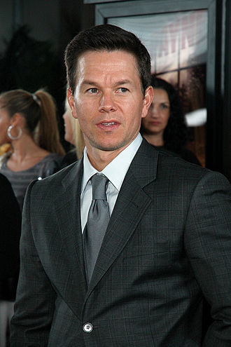

Марк Волберг

Марк Роберт Майкл Волберг (англ. Mark Robert Michael Wahlberg; нар. 5 червня 1971,
Дорчестер, Массачусетс, США)
— американський актор, номінант премії «Оскар», продюсер, модель, філантроп, музикант.
Зміст
- Біографія
- Благодійність
- Фільмографія
Бшографія
Народився в найбільшому передмісті Бостона Дорчестері в Массачусетсі. Наймолодший із дев'яти дітей у сім'ї. Його
брати й сестри (від старшого до молодшого): Артур, Джим, Деббі, Мішель, Пол, Трейсі, Роберт і Донні. Мати, Елма Ілейн
(Alma Elaine), у різний час працювала банківським клерком і медсестрою